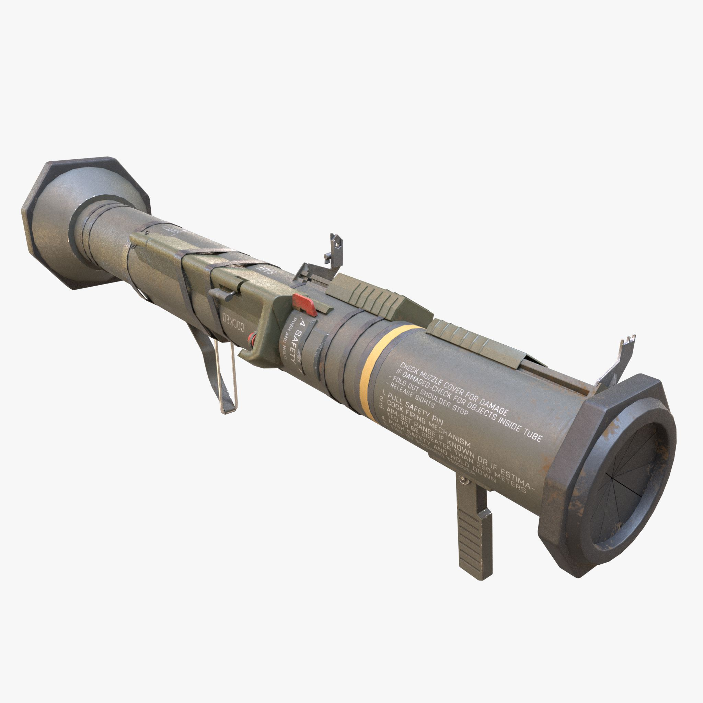

l'AT-4 CS - pour Eighty Four Confined Space - est un lance-roquette de type arme individuelle consommable.
Il est destiné, en combat à courte distance, à détruire les véhicules.
Une contre masse liquide absorbe les gazs de propulsion permettant un tir depuis un espace confiné.

Sortie des organes de visée
Déployer l'oeilleton du corps du lanceur (possible de l'aggrandir avec / du pavé numérique)
Retrait des sécurités
Retrait de la goupille double, lever le levier d'armement
Visée
Régler la distance de 50 à 400 m (par palier de 50) et aligner le guidon au pieds de l'objectif (sur l'avant en cas de mobile en suivant quelques secondes)
Faire feu
Distance : 100 m puis 200 m
Cadre d'ordre de l'instructeur de tir :
Distance 200 m
Vitesse : 20 km/h
Cadre d'ordre de l'instructeur de tir :